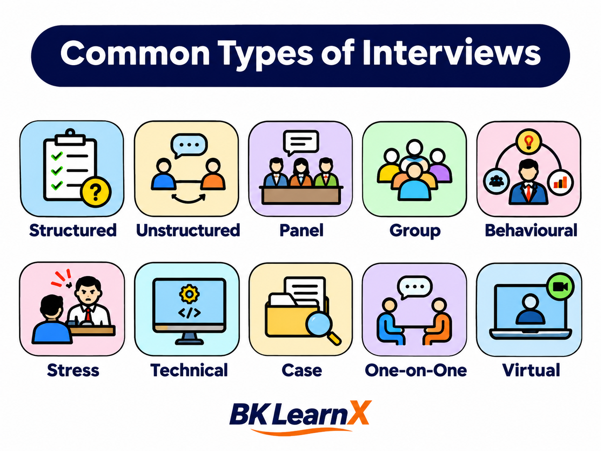

An interview is an important method of communication used in education, business, employment, and professional organizations. It is a formal or informal conversation between two or more people in which one person asks questions and another person provides answers. The main purpose of an interview is to collect information, evaluate knowledge, understand experience, and make decisions.
Interviews are commonly conducted by companies to select suitable candidates for jobs. They are also used in colleges for admission, research, surveys, journalism, and other professional activities. During an interview, the interviewer asks questions to understand the candidate's qualifications, skills, personality, confidence, and communication abilities.
The main objectives of an interview are explained below:
An interview plays an important role in professional and academic life. It provides an opportunity to understand a person's abilities and helps organizations make better decisions.
Interviews can be classified into different types according to their purpose, structure, number of participants, and method of communication. The major types are explained below.
A structured interview is a type of interview in which the interviewer prepares a fixed set of questions before conducting the interview. Every candidate is generally asked the same questions in the same order. It makes the evaluation process systematic and consistent.
Example: A company asks all job applicants the same questions about their education, experience, and skills.
An unstructured interview is a flexible type of interview in which there is no fixed list or sequence of questions. The interviewer asks questions according to the conversation and the responses given by the interviewee.
Example: An informal discussion between a manager and an employee about work experience and career goals.
A semi-structured interview combines the features of structured and unstructured interviews. The interviewer prepares some important questions in advance but can also ask additional questions according to the candidate's answers.
Example: A job interview in which the interviewer follows prepared questions but also asks follow-up questions about previous projects.
A panel interview is conducted by a group of interviewers who interview a single candidate at the same time. The panel may include an HR manager, department head, technical expert, and other senior officials.
Example: A candidate appearing before a selection committee for a government job.
A group interview is a type of interview in which several candidates are interviewed together. The interviewer observes their communication skills, leadership qualities, teamwork, and ability to express ideas.
Example: A company invites ten candidates together and gives them a group discussion topic.
A telephonic interview is conducted through a telephone call. It is generally used for initial screening of candidates. The interviewer asks basic questions about qualifications, experience, availability, and job expectations.
Example: An HR executive calls a candidate to discuss basic details before arranging a personal interview.
An online interview is conducted through internet-based video conferencing applications. It allows the interviewer and interviewee to communicate without being physically present at the same location.
Example: An interview conducted through Google Meet, Zoom, or Microsoft Teams.
A technical interview is conducted to evaluate the technical knowledge and practical skills of a candidate. It is commonly used in IT companies, engineering organizations, and technical departments.
Example: A software developer is asked questions about programming languages, databases, networking, and problem-solving.
A behavioural interview is used to understand how a candidate handled different situations in the past. The interviewer asks questions related to teamwork, leadership, problem-solving, conflict management, and decision-making.
Example: The interviewer asks, "Describe a situation when you solved a difficult problem while working in a team."

The format of an interview refers to the systematic arrangement of different stages followed during the interview process. A proper interview format helps maintain discipline, saves time, and makes communication effective.
A general interview format consists of the following stages:
The interview begins with a formal greeting between the interviewer and interviewee. The interviewer introduces themselves and creates a comfortable environment. The candidate may also introduce themselves briefly.
The candidate introduces themselves by providing basic information such as their name, educational qualifications, skills, experience, and career goals.
The interviewer asks questions about the candidate's educational background, previous work experience, achievements, interests, and personal details relevant to the interview.
This is the main part of an interview. The interviewer asks questions related to the candidate's knowledge, qualifications, skills, experience, and job requirements. The candidate should answer confidently and clearly.
For technical positions, the interviewer may ask subject-related questions, coding problems, practical tasks, or problem-solving questions to evaluate the candidate's abilities.
At this stage, the candidate may ask questions about the job role, salary, responsibilities, working environment, company policies, or future opportunities.
At the end of the interview, the interviewer thanks the candidate for participating and explains the next steps, such as the result announcement, further interview rounds, or selection process. The candidate should also thank the interviewer politely.
| Interview Format | Description / Example |
|---|---|
| Job Interview | Used by companies to select suitable candidates for employment. |
| Academic Interview | Used by educational institutions for admission or academic selection. |
| Technical Interview | Used to check technical knowledge and practical skills. |
| Online Interview | Conducted through video conferencing applications. |
| Panel Interview | Conducted by multiple interviewers together. |
| Telephonic Interview | Conducted through a telephone call. |
A candidate should develop certain qualities to perform well in an interview:
Interview preparation is an important process that helps a candidate get ready for an interview. It includes collecting information about the organization, understanding the job requirements, preparing answers to common questions, improving communication skills, and developing confidence. Proper preparation helps candidates present themselves professionally and increases their chances of getting selected.
A candidate should follow the steps given below to prepare effectively for an interview.
The first step is to collect information about the company or organization where the candidate is applying. Understanding the organization helps candidates answer questions related to the company and shows that they are genuinely interested in the opportunity.
A candidate should carefully read the job description before attending an interview. The job description explains the responsibilities, qualifications, skills, and experience required for a particular position.
A resume or CV is an important document that provides information about a candidate's education, skills, qualifications, achievements, and work experience. The interviewer may ask questions based on the information written in the resume.
Candidates should prepare answers to commonly asked interview questions. These questions help interviewers understand the candidate's personality, qualifications, interests, and career goals.
Some common interview questions are:
Candidates should prepare meaningful answers instead of memorizing every sentence. Answers should be clear, honest, and relevant to the job.
Good communication skills are essential for performing well in an interview. A candidate should be able to express ideas clearly and understand the questions asked by the interviewer.
For technical and professional interviews, candidates should revise their subject knowledge and practical skills. The interviewer may ask questions related to the candidate's educational background or job requirements.
A mock interview is a practice interview conducted before the actual interview. It helps candidates understand the interview process and improve their performance.
Body language plays an important role in creating a positive impression during an interview. It includes facial expressions, eye contact, posture, gestures, and overall behaviour.
A candidate should wear clean, neat, and professional clothes during an interview. Proper dressing creates a positive first impression and shows seriousness towards the opportunity.
Before attending an interview, candidates should arrange all the required documents properly. Missing important documents may create unnecessary problems during the selection process.
Punctuality is an important quality of a professional candidate. A candidate should know the interview location, date, and time in advance. Proper travel planning helps avoid delays and unnecessary stress.
At the end of an interview, the interviewer may ask whether the candidate has any questions. A candidate should prepare a few relevant questions to understand the job role and organization better.
Some suitable questions are:
During the interview, a candidate should remain calm, polite, and confident. Questions should be heard carefully, and answers should be given honestly.
Interview preparation does not end when the interview is completed. A candidate should follow the instructions given by the interviewer and wait for the result patiently.
Explanation: This is usually one of the first questions asked in an interview. The interviewer wants to know about the candidate's educational background, skills, interests, achievements, and personality. The answer should be brief, professional, and relevant to the job.
Suitable Answer:
Good morning, sir/madam. My name is Rahul Sharma. I have completed my graduation and I am interested in technology and computer applications. I have basic knowledge of computer programming, web development, and database management. I am a hardworking, disciplined, and responsible person. I enjoy learning new technologies and improving my technical skills. My goal is to build a successful career and contribute positively to the organization.
Important Points:
Explanation: The interviewer asks this question to understand the candidate's academic background, qualifications, and educational achievements. It helps determine whether the candidate has the required educational knowledge for the job.
Suitable Answer:
I have completed my 10th and 12th education from a recognized institution. After that, I completed my graduation. Currently, I am pursuing a postgraduate diploma course in computer applications. During my education, I have studied different subjects related to computers, programming, databases, and information technology. My educational background has helped me develop basic technical knowledge and problem-solving skills.
Important Points:
Explanation: This question helps the interviewer understand the candidate's positive qualities and areas that need improvement. It also evaluates self-awareness, honesty, and willingness to learn.
Suitable Answer:
My strengths are that I am hardworking, punctual, honest, and a quick learner. I can work effectively in a team and I always try to complete my responsibilities on time. I am also interested in learning new skills and solving problems. One of my weaknesses is that sometimes I spend extra time checking my work because I want it to be accurate. However, I am working on improving my time management and decision-making skills.
Important Points:
Explanation: Through this question, the interviewer wants to know why the candidate is interested in joining the organization. It also checks whether the candidate has researched the company and understands its work and opportunities.
Suitable Answer:
I want to join your organization because it provides a good professional environment and opportunities for learning and career development. I believe that working in your organization will help me improve my technical knowledge, communication skills, and practical experience. I am interested in the work of your organization, and I believe that my dedication, positive attitude, and willingness to learn can contribute to its success.
Important Points:
Explanation: This question allows the candidate to explain why they are suitable for the job. The interviewer wants to understand the candidate's skills, qualifications, confidence, and ability to contribute to the organization.
Suitable Answer:
You should hire me because I have the required educational background, basic technical knowledge, and a strong willingness to learn. I am hardworking, responsible, and dedicated towards my work. I can adapt to new situations and work independently as well as in a team. Although I am at the beginning of my professional career, I am ready to learn from experienced people and give my best performance to the organization.
Important Points:
Explanation: This question helps the interviewer understand the candidate's future plans, career goals, ambitions, and commitment towards professional development. It also shows whether the candidate has a clear direction in life.
Suitable Answer:
In the next five years, I see myself as a skilled and experienced professional in my chosen field. I want to improve my technical knowledge, gain practical experience, and take on greater responsibilities. I also want to develop my communication, leadership, and problem-solving skills. My aim is to grow professionally and contribute to the success and development of the organization.
Important Points:
Explanation: The interviewer asks this question to understand the candidate's professional ambitions and future plans. It helps determine whether the candidate has a clear purpose and is interested in developing a successful career.
Suitable Answer:
My short-term career goal is to get a good opportunity where I can use my knowledge, improve my technical skills, and gain practical experience. I want to learn from experienced professionals and become more confident in my work. My long-term career goal is to become a successful professional in my chosen field, take on greater responsibilities, and contribute to the growth of the organization.
Important Points:
A Mock Interview is a practice interview conducted before an actual job interview. It is designed to provide candidates with an experience similar to a real interview. During a mock interview, a person acts as an interviewer and asks questions related to education, skills, experience, personality, and career goals. The candidate answers these questions as they would in a real interview.
For example, before attending a campus placement interview, a college student may participate in a mock interview conducted by a teacher or placement officer. The teacher asks common interview questions, observes the student's answers, and provides feedback to improve performance.
The main objectives of conducting a mock interview are explained below:
Mock interviews provide several benefits to students, freshers, and experienced professionals. Some important benefits are given below:
One of the biggest benefits of a mock interview is that it increases the confidence of candidates. Many people feel nervous when facing an interviewer for the first time. Regular practice helps reduce fear and makes candidates more comfortable while answering questions.
Mock interviews help candidates improve their speaking and listening abilities. They learn how to explain their ideas clearly, use appropriate language, and give meaningful answers. These communication skills are useful in both professional and personal life.
During a mock interview, the interviewer observes the candidate's performance and identifies areas that need improvement. These may include incorrect answers, poor communication, lack of subject knowledge, hesitation, or improper body language.
Mock interviews help candidates understand the importance of body language. They learn to maintain eye contact, sit properly, use suitable gestures, and maintain a positive facial expression. Proper body language creates a positive impression during an actual interview.
Many candidates experience stress and nervousness before an interview. Mock interviews provide a safe practice environment where candidates can make mistakes without worrying about actual selection. Repeated practice reduces anxiety and improves performance.
Mock interviews may include technical and subject-related questions. When candidates are unable to answer certain questions, they can identify the topics they need to revise. This helps improve their technical knowledge and practical understanding.
An interviewer or trainer provides feedback about the candidate's strengths and weaknesses. This feedback helps candidates understand their performance and make necessary improvements before attending a real interview.
Mock interviews provide an experience similar to an actual interview. Candidates become familiar with common interview questions, interview procedures, and professional behaviour. This preparation increases their chances of performing successfully.
First, the candidate should select a job role and prepare a resume. The interviewer should also prepare questions related to the candidate's education, skills, and job requirements.
Arrange a suitable place where the mock interview can be conducted without disturbance. The candidate should wear formal clothes and behave as if attending a real interview.
The interviewer asks common questions related to self-introduction, educational qualifications, strengths, weaknesses, technical knowledge, and career goals.
The candidate listens carefully and answers each question clearly and confidently. The candidate should maintain proper eye contact and professional behaviour.
The interviewer observes the candidate's communication skills, confidence, subject knowledge, body language, and ability to answer questions.
At the end of the mock interview, the interviewer provides feedback and suggests improvements. The candidate should work on the identified weaknesses and practise again.
The following is an example of a mock interview between an interviewer and a student applying for the position of Junior Web Developer.
Interviewer: Good morning! Please introduce yourself.
Candidate: Good morning, sir. My name is Divya Mishra. I have completed my graduation and have knowledge of C++, JavaScript, Python and basic database management. I am interested in web development and enjoy learning new technologies. I am hardworking, disciplined, and willing to improve my skills.
Interviewer: What are your educational qualifications?
Candidate: I have completed my graduation from a recognized university. During my studies, I developed an interest in computer applications and web technologies. I have also practised different technical concepts through assignments and projects.
Interviewer: What are your strengths and weaknesses?
Candidate: My strengths are that I am hardworking, punctual, and a quick learner. I can work independently as well as in a team. One of my weaknesses is that sometimes I take extra time to check my work, but I am improving my time management skills.
Interviewer: Why do you want to become a Web Developer?
Candidate: I want to become a Web Developer because I enjoy creating websites and solving technical problems. This field provides opportunities to learn new technologies and develop useful applications.
Interviewer: What is HTML?
Candidate: HTML stands for HyperText Markup Language. It is the standard markup language used to create the structure of web pages. It uses different tags and elements to organize text, images, links, tables, and forms.
Interviewer: Why should we hire you?
Candidate: You should hire me because I have basic knowledge of web development, a strong willingness to learn, and a positive attitude. I am dedicated to my work and ready to improve my skills according to the organization's requirements.
Interviewer: Thank you for your time. Do you have any questions?
Candidate: Thank you, sir, for giving me this opportunity. I would like to know about the training process and the responsibilities of this position.
Interviewer: Thank you. We will inform you about the next steps.
Candidate: Thank you, sir. Have a nice day!
| Mock Interview | Real Interview |
|---|---|
| It is a practice interview. | It is an actual selection interview. |
| Its main purpose is preparation and improvement. | Its main purpose is evaluation and selection. |
| It is generally conducted by teachers, trainers, or friends. | It is conducted by employers or authorized interviewers. |
| Mistakes are used as learning opportunities. | Performance may affect the final selection decision. |
| Feedback is generally provided for improvement. | Feedback may or may not be provided. |
Recruitment is the process of finding, attracting, and selecting suitable candidates for vacant positions in an organization. It is an important activity performed by companies and organizations to hire qualified and skilled employees. An interview is one of the most important stages of the recruitment process because it allows recruiters to communicate directly with candidates and evaluate their suitability for a particular job.
Recruiters conduct interviews because educational qualifications and resumes alone cannot provide complete information about a candidate. Through direct interaction, recruiters can evaluate a candidate's confidence, behaviour, problem-solving ability, attitude, and professional skills.
Recruiters conduct interviews for several important reasons. The major reasons are explained below:
One of the main reasons for conducting interviews is to evaluate the knowledge and skills of candidates. Recruiters want to know whether applicants have the technical and professional abilities required for a particular position.
For example, when recruiting a web developer, the interviewer may ask questions about HTML, CSS, JavaScript, databases, and web development. These questions help determine whether the candidate understands the required technologies.
Recruiters conduct interviews to verify the information mentioned in a candidate's resume or CV. They may ask questions about educational qualifications, previous employment, projects, achievements, and technical skills.
This helps recruiters understand whether the information provided by the candidate is accurate and whether the candidate can explain their qualifications and experience properly.
A resume cannot completely explain a person's personality. Through interviews, recruiters observe the candidate's attitude, behaviour, confidence, honesty, and professional manner.
They also evaluate how candidates communicate with others, respond to difficult questions, and behave in different situations.
Communication skills are important in almost every professional field. Recruiters conduct interviews to check whether candidates can express their thoughts clearly and understand instructions properly.
Good communication skills help employees work with colleagues, managers, customers, and other members of an organization.
Recruiters may ask practical or situation-based questions to understand how candidates handle problems and make decisions. These questions help evaluate analytical thinking, creativity, and decision-making abilities.
For example, a recruiter may ask a candidate how they would handle a difficult situation while working on a team project.
Recruiters want to know why a candidate is interested in joining their organization. They may ask questions about career goals, professional interests, and reasons for applying for the position.
This helps them understand whether the candidate is genuinely interested in the job and willing to contribute to the organization.
An organization may receive applications from many candidates for a single position. Interviews help recruiters compare candidates according to their qualifications, skills, experience, and job requirements.
After evaluating the candidates, recruiters can identify the person who is most suitable for the available position.
Many organizations require employees to work in teams and take responsibility for different tasks. Recruiters conduct interviews to understand whether candidates can cooperate with others, manage responsibilities, and demonstrate leadership qualities when required.
Interviews play a significant role in the recruitment and selection process. Their importance is explained below:
Interviews help organizations select the right person for the right job. By evaluating candidates directly, recruiters can identify individuals whose knowledge, qualifications, and abilities match the job requirements.
Interviews provide an opportunity for direct communication between recruiters and candidates. Both parties can exchange information, discuss expectations, and understand each other's requirements.
A proper interview process helps recruiters identify unsuitable candidates before making a final selection. It allows them to examine important details that may not be clearly visible in a resume or application form.
Interviews allow recruiters to ask technical questions and practical problems related to the job. This helps them understand whether candidates can apply their knowledge in real working situations.
Selecting an unsuitable employee may result in additional recruitment, training, and replacement costs. Interviews help organizations make more informed hiring decisions and reduce the possibility of unnecessary recruitment expenses.
Every organization has its own working environment, rules, and professional expectations. Interviews help recruiters understand whether a candidate's working style, attitude, and expectations are suitable for the organization and the particular job role.
Interviews provide an opportunity for candidates and recruiters to communicate professionally. Candidates can learn about the organization, while recruiters can explain job responsibilities and workplace expectations.
Recruiters do not evaluate candidates only on their current knowledge and experience. They also consider learning ability, adaptability, motivation, and potential for future professional development.
During an interview, recruiters generally evaluate several qualities to determine whether a candidate is suitable for the job.
An interview is generally conducted after the initial application and resume screening stages. The complete recruitment process may include the following steps:
Suppose a software company has a vacancy for a Junior Web Developer. The company receives applications from 50 candidates. The recruitment team first checks their resumes and shortlists 10 candidates according to their educational qualifications and technical skills.
After shortlisting, the company conducts interviews to evaluate the candidates. The interviewer asks questions about HTML, CSS, JavaScript, databases, previous projects, and problem-solving abilities. Candidates are also evaluated on their communication skills, confidence, and willingness to learn.
After completing the interviews, the recruitment team compares the candidates' performance and selects the most suitable applicant for the position. This example shows how interviews help organizations make better recruitment decisions.
Interview skills are the abilities and qualities that help a person perform effectively during an interview. These skills include communication, confidence, listening, body language, eye contact, professional behaviour, and the ability to answer questions clearly. Interview skills are important for students, freshers, and experienced professionals who want to get employment or achieve career growth.
An interview is not only about answering questions correctly. It is also about presenting oneself in a professional manner and creating a positive impression on the interviewer. A candidate may have good educational qualifications and technical knowledge, but poor communication or unprofessional behaviour can affect their interview performance.
The following are the most important skills that a candidate should develop before attending an interview.
Confidence is one of the most important qualities required to perform well in an interview. It means having trust in your knowledge, abilities, and skills. A confident candidate can express ideas clearly, answer questions without unnecessary hesitation, and handle difficult situations calmly.
Confidence helps candidates create a positive impression on the interviewer. It also reduces nervousness and improves communication during the interview.
How to Improve Confidence:
Body language refers to the non-verbal signals that a person communicates through physical movements, posture, gestures, and facial expressions. It plays an important role in an interview because it reflects a candidate's confidence, interest, and professional attitude.
An interviewer observes the candidate's sitting posture, hand movements, facial expressions, and overall behaviour. Positive body language creates a professional impression, whereas inappropriate body movements may indicate nervousness or a lack of interest.
Important Body Language Tips:
Eye contact is an important part of non-verbal communication. It means looking towards the interviewer naturally while listening and answering questions. Proper eye contact shows confidence, attention, honesty, and interest in the conversation.
A candidate should maintain natural eye contact without continuously staring at the interviewer. During a panel interview, the candidate should also make eye contact with different members of the panel while answering questions.
Important Eye Contact Tips:
Professional behaviour refers to the way a candidate presents and conducts themselves in a formal working environment. It includes politeness, discipline, punctuality, respect, honesty, responsibility, and appropriate communication.
A candidate should behave respectfully throughout the interview. Professional behaviour helps create a positive impression and shows that the candidate understands workplace expectations.
Important Professional Behaviour Tips:
Communication skills refer to the ability to express thoughts, ideas, and information clearly and effectively. Good communication is essential because candidates need to explain their qualifications, skills, experience, and opinions during an interview.
How to Improve Communication Skills:
Listening skills refer to the ability to understand and pay attention to what another person is saying. During an interview, candidates should listen carefully to every question before giving an answer.
Good listening helps candidates understand the exact meaning of questions and avoid giving irrelevant answers. It also shows respect towards the interviewer.
Important Listening Tips:
A positive attitude means approaching situations with confidence, patience, and a willingness to learn. Interviewers often prefer candidates who remain calm, show interest in their work, and respond positively to challenges.
Important Tips:
Time management is the ability to organize and complete tasks within the given time. Punctuality means arriving at the correct place at the correct time. Both qualities are important because they reflect discipline and responsibility.
Interview skills are important for achieving success in professional and academic life. Their major benefits are explained below:
Candidates should avoid the following mistakes during an interview:
A candidate can improve interview skills through regular practice and preparation. Some effective methods are: